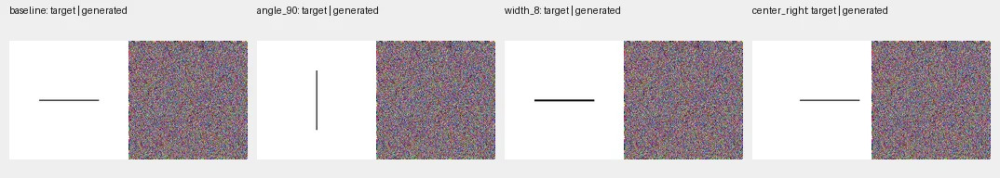
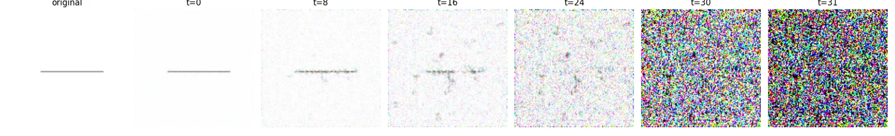
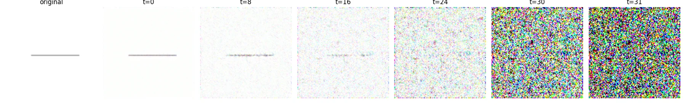
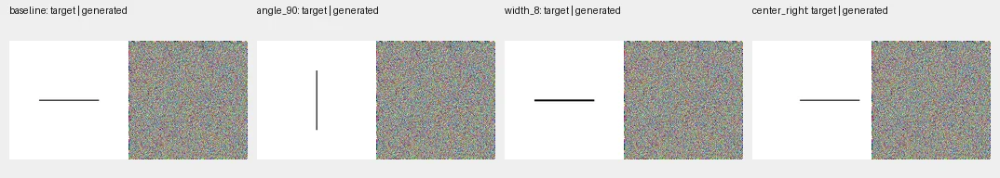

그림을 읽고 배우고 결과를 저장하는 길은 실제로 연결했습니다. 하지만 AI가 원하는 선을 잘 그리는 단계는 아직 아닙니다. 선에 더 집중하도록 바꿔 오차 숫자는 줄었지만, 그림의 모양은 더 고쳐야 합니다. 가장 최근 실험은 중간 정지 설정 때문에 멈췄고, 정확한 이어 학습은 아직 확인해야 합니다.
아래 숫자와 코드 이름은 같은 시험을 다시 해 보기 위한 기록입니다. 발표할 때는 각 버전의 첫 설명과 그림부터 읽어도 흐름을 알 수 있습니다.
파이프라인은 여러 도구를 차례로 연결한 작업 흐름입니다. 그림을 읽고, AI를 학습하고, 결과를 저장하는 길부터 시험합니다. 코드가 끝까지 실행되는 것과 원하는 그림이 나오는 것은 다릅니다. 이 기록은 공유 노트북에 남은 출력과 09 대화를 확인한 것이며, 여기서 학습을 새로 실행한 결과는 아닙니다.
2026년 11월 19일 오전 6시 51분 기록입니다. 오전 1시 9분 시작한 실험은 80에폭을 목표로 했지만, 중간 정지 설정 때문에 5에폭·240스텝에서 멈췄습니다. 종료 사유는 configured_epoch_pause입니다. GPU 고장이나 Colab 시간 종료 때문이라고 단정하지 않습니다.
VR0.52의 직선 20에폭 모델에서 VR0.53이 가중치만 가져와 1에폭 배웠고, VR0.54는 그 결과의 가중치만 다시 가져왔습니다. 학습 조정 상태·난수·에폭 번호는 새로 시작했습니다. 따라서 세 실험을 같은 설정의 26에폭으로 합치지 않습니다. 학습은 직선 384장, 검증은 96장입니다.
| VR0.54 같은 기준의 비교 | 시작 전 | 5에폭 후 |
|---|---|---|
| 전체 잡음 예측 오차 | 0.041405 | 0.031343 (24.30% 감소) |
| 선 영역 오차 | 0.412460 | 0.241347 (41.49% 감소) |
| 배경 오차 | 0.035261 | 0.026402 (25.12% 감소) |
| 16배 설정의 가중 오차 | 0.083197 | 0.057516 (30.87% 감소) |
시작 전 값은 VR0.53의 가중치를 새 VR0.54 기준으로 다시 평가한 값입니다. 진단 화면에 남은 VR0.52 기준선이라는 표현과 다릅니다. 6배와 16배 실험의 가중 오차를 바로 비교하지 않습니다. 감소율은 그림 생성 성공률이 아닙니다.
16배는 선 중심의 최대 중요도입니다. 축소와 부드러운 가장자리 처리 때문에 실제 최대값은 원본 2px 선에서 약 7.94, 4px 선에서 약 13.18이었습니다. 모든 선 픽셀이 16배가 되는 것은 아닙니다.


학습 범위 안 세 요청의 자동 형태 검사는 1~5에폭 모두 실패했습니다. 오른쪽 위치 요청(center_right)은 학습 범위 밖입니다. 최소 10에폭 이후 세 번 연속 통과하면 끝내는 코드도 있지만 이번 정지 이유는 그것이 아닙니다. 자동 검사와 작가 승인도 구분합니다.
09 대화에서는 VR0.54 버전을 유지하고 기존 셀 9와 출력을 보존한 채, 추가 셀로 재개하도록 요청했습니다. Drive와 라이브러리, 설정·정의 셀을 복구하고 같은 실험과 체크포인트를 지정합니다. RUN_MODE=resume, PAUSE_AFTER_EPOCH=None을 확인하고 목표·자료·오차 계산 기준을 맞춥니다. 분할·JSON·섞기 검사 기록은 백업 후 재사용하되 데이터나 코드 기준이 바뀌면 재검사합니다.
출력은 제목만으로 찾지 말고 셀 ID와 내용 해시로 확인해 별도로 저장합니다. 10배치마다 저장, 최저값 저장, 시간 여유와 사용자 중단 처리 코드는 있지만, 이번에는 설정에 따른 정지만 확인했습니다. 강제 종료 후 복구와 새 재개·백업 코드는 추가 실행 검증이 필요합니다.
11월 19일 오전 0시 26분 시작한 별도 실험입니다. 그림에서 선은 평균 약 0.87%뿐이라 넓은 배경의 오차가 작아져도 선을 잘 배우지 못할 수 있다고 보았습니다. 확정된 원인이라기보다 연구 해석입니다. 선 중심은 최대 6배, 옆 2픽셀은 최대 +1.5의 중요도를 주었습니다. 잡음이 너무 강한 구간(ᾱ<0.10)은 일반 오차로 계산합니다.
기존 20에폭·960스텝 가중치만 가져와 새 학습 상태로 시작했습니다. RGB 128×128 TinyUNet, 원본 class ID 3와 12개 수치 조건, 직선 384/96장, 그룹 누출 0, 학습률 0.0002, 묶음 8입니다. 2에폭 목표였지만 PAUSE_AFTER_EPOCH=1에 따라 1에폭·48스텝 후 멈췄습니다.
| 같은 검증 96장 | 시작 전 | 1에폭 후 |
|---|---|---|
| 선 영역 오차 | 0.416686 | 0.412460 (약 1.01% 감소) |
| 배경 오차 | 0.033858 | 0.035261 (증가) |
| 전체 오차 | 0.039837 | 0.041405 (증가) |
| 가중 검증 오차 | 0.057640 | 0.059374 (증가) |
선에 배분된 가중치 몫은 약 3.58%이고 가중치가 켜진 검증 비율은 약 84.38%였습니다. 3.58%는 실제 오차 기여도와 같은 값이 아니며, 6배 중요도를 준다고 선 면적이나 전체 오차가 그대로 6배가 되지 않습니다. 선의 오차는 조금 줄었지만 전체 개선이라고 판단할 수 없습니다.

사용자 이미지와 저장된 진단 이미지의 픽셀 일치를 확인했습니다. 강한 잡음 단계 t=31의 선 영역 복원 MAE는 1.02892로 한계가 남았습니다. 실제 새 그림 네 장도 요청한 직선으로 보기 어려웠습니다.

시작 전과 1에폭 후 각각 네 장 생성, latest의 step 48·next_epoch 2·cursor 0와 optimizer 포함을 확인했습니다. best_validation은 시작 전 값을 비교 후보에 넣지 않아 더 나쁜 1에폭 결과도 best로 저장했습니다. 이름만 보고 좋아졌다고 판단하지 않습니다. 이미지 목록의 total=4가 매번 보여 누적 기록도 더 확인해야 합니다. 실제 세션 중단 후 이어 학습은 별도 검증입니다.
다음에는 배수만 올리는 방법과 선·배경을 각각 평가하여 합치는 방법을 비교해야 합니다. 배경 잡음 증가, 같은 난수 출발점(seed)의 생성 결과, 강한 잡음 복원을 함께 살핍니다. 이 별도 개선본과 VR0.52 파일 내부에 남아 있던 구형 VR0.53 제목을 같은 실험으로 합치지 않습니다.
11월 18일 오후 9시 43분 시작한 실행입니다. 파일명은 VR0.52지만 내부 제목과 보조 코드는 VR0.53으로 표시되어 있었습니다. 사전학습 없이 시작한 TinyUNet, 기본 채널 16, RGB 128×128, 확산 32단계, 학습률 0.0002, 묶음 8, class ID 3와 원본 12개 조건으로 직선 384장을 20에폭·960스텝 학습했습니다. 검증은 96장입니다. 여러 선 종류를 섞어 순서를 검사한 출력은 자료 검사이지 혼합 학습이 아닙니다.
평균 학습 오차는 0.771868에서 0.042771, 검증 오차는 0.544080에서 0.039837로 줄었습니다. 매 에폭 네 조건의 그림과 수치를 저장해 PNG 80장이 남았습니다. latest는 step 960, next_epoch 21, cursor 0와 optimizer 포함 상태로 읽혔습니다. next_epoch 21은 21에폭을 배웠다는 뜻이 아닙니다.
복원 진단에서 t=8과 t=31의 잡음 예측 MSE는 약 0.03346과 0.03224로 비슷했지만, 실제 복원 MAE는 약 0.03778에서 1.02245로 나빠졌습니다. 숫자 하나가 낮다고 선을 잘 만든 것은 아닙니다.
TensorBoard 2.21.0 준비와 Drive 동기화 출력은 확인했지만 대시보드 화면은 숨겨져 있어 별도 확인이 필요합니다. 10배치 및 최저값 저장, best_train_step.pt와 best_validation.pt 존재를 확인했습니다. 최저 배치 MSE는 step 953의 0.032494, 최저 검증 MSE는 epoch 20의 0.039837입니다. 실제 중단·재개, 80장의 누적 목록 보존은 추가 점검합니다.
다음 계획은 직선에 곡선, 이어 자유곡선을 더하되 이미 배운 종류도 유지하는 누적 학습입니다. 비율과 조건은 아직 검증할 사항입니다. Drive 경로도 후속 코드에서 공통 기준에 맞추며 과거 실행 기록을 소급해 바꾸지 않습니다.
11월 18일 오후 2시 20분 실행입니다. 전체 1,640쌍의 파일과 원본군 중복 0을 확인한 뒤 직선 384장 학습·96장 검증을 실행했습니다. 나머지 928장·232장은 제외했습니다. 512px 흑백 그림을 LANCZOS 방식으로 128px RGB 3채널, 값 −1~1로 바꿨습니다. straight를 원본 line ID 3에 맞추고 12개 조건도 원래 모델 규칙을 사용했습니다.
1에폭에서 묶음 8, 학습 48배치·검증 12배치, 평균 오차 0.771868·0.544080을 기록했습니다. PNG 네 장, metrics.json과 체크포인트 global_step 48·next_epoch 2·cursor 0·optimizer를 확인했습니다. 한 번으로 감소 추세나 좋은 생성 성능을 단정하지 않습니다.

기본 요청은 중심 (0.5,0.5), 각도 0°, 두께 4px입니다. 같은 seed로 각도 90°, 두께 8px, 중심 X=0.65를 각각 바꿨습니다. X=0.65는 훈련 위치 약 0.459~0.567 밖입니다. 차이를 비교하도록 설계한 것이지 요청대로 그렸다는 증거는 아닙니다.
전체 JSON 키를 검사했고 구도선 200개에 seed 키가 없음을 기록했습니다. 이것이 전체 그림의 시각 검수 완료는 아닙니다. events.jsonl과 요청·적용 조건·결과 기록을 남기는 코드가 있습니다. 실행은 new 모드이며 정확한 재개, 곡선·도형·인체·서사 작품 생성은 검증 범위 밖입니다.
외부 그림과 JSON을 묶음으로 읽어 이미지 [8,1,128,128], class_id [8], cond12 [8,12]를 만들었습니다. 이미지 값은 0~1입니다. 12칸 중 중심 X·Y, 각도의 cos·sin, 굵기만 활성화하고 나머지 7칸은 0이었습니다. 이것은 12가지 속성을 모두 조절한다는 뜻이 아닙니다.
중심 (0.5,0.5), 45°, 두께 4px는 임시 class ID 12와 [0.5,0.5,0.7071,0.7071,0.0078125,0,0,0,0,0,0,0]으로 바뀌었습니다. 512→128에서는 두께 1px입니다. 미지원 목록이 비었다고 모델 생성까지 성공한 것은 아닙니다.
데이터의 straight ID 12와 VR0.02 검사 목록의 line ID 3이 달랐고, 다른 12종은 대응 규칙이 없었습니다. 이름뿐 아니라 각 숫자의 뜻을 맞춰야 했습니다. 실제 체크포인트 호환을 확인한 검사는 아니었습니다. 학습은 RUN_EPOCH_PILOT=False로 건너뛰었고, 남은 SmokeNoiseNet은 조건 입력을 받지 않았습니다. 원본군 검사는 대기, JSON 검사 출력도 직선 30개뿐이었습니다.
후속 VR0.5 방향은 같은 조건 규칙으로 학습·생성을 연결하는 것이었습니다. 조건을 담는 숫자 묶음을 만들었다고 각도·굵기·곡선 제어가 생기지는 않습니다.
11월 18일 오전 6시 32분 시작한 독립 시험입니다. 파일에는 v0.3, 첫 설명에는 v0.2.0이 남아 있었습니다. 외부 PNG·JSON 1,640쌍을 읽고 학습 1,312개·평가 분할 328개를 구분했습니다. 묶음 8×1×128×128, float32, 값 0~1로 2에폭 실행하고 매번 네 그림, metrics.json, checkpoint.pt를 저장했습니다. 모델과 optimizer 다시 읽기도 통과했습니다.
학습 MSE는 0.302304에서 0.163088로 낮아졌지만 검증 오차는 계산하지 않았습니다. SmokeNoiseNet은 TinyUNet과 다른 무조건부 시험 모델이어서 JSON의 각도·종류를 입력으로 받지 않았습니다. 그림은 여전히 잡음입니다.

파일 ID 중복은 없지만 원본군 분리는 GROUP CHECK PENDING이었고, 명시적인 이미지 읽기 검사는 여섯 샘플입니다. 가는 선 축소 보존과 정확한 중단·재개는 별도 확인이 필요했습니다. Pillow의 향후 사용 방식 경고는 있었지만 이 실행의 저장과 재로드는 끝났습니다.
11월 16일의 VR0.02는 코드로 도형을 만드는 방식이었고 새 외부 파일 로더 연결 전이었습니다. 이후 독립 시험과 직선 TinyUNet 실행이 이루어졌습니다. 과거 대기 상태를 최신 결과와 혼동하지 않습니다. 외부 파일의 크기·채널·값 범위, 원본군 분리, 조건 변환과 저장 호환을 맞춰야 합니다. 물체 회전값을 카메라 각도로 바꾸어 읽어서는 안 됩니다.
앞·옆·뒤 이미지를 나누는 CharacterDeform_for_tripo3d.ipynb는 준비 도구이지 학습 코드가 아닙니다. 서사를 단어나 JSON으로 바꿨다고 모델이 그 요청을 이해하는 것도 아닙니다. 지원하지 않는 포즈와 시점은 미지원으로 표시합니다.
loss만으로 감정이나 성장을 정하지 않습니다. 인간 자매의 큰 사건과 결말은 다음 프로젝트 범위이며 작가가 정합니다. 10월 SD 1.5 CPT 기획과 후속 LoRA 계획을 구분합니다. Tiny 파일의 확장자나 키를 맞춘다고 기존 SD 도구와 호환되지 않습니다. 전체 자동 흐름이 완성되었다는 실행 근거는 아직 없습니다.